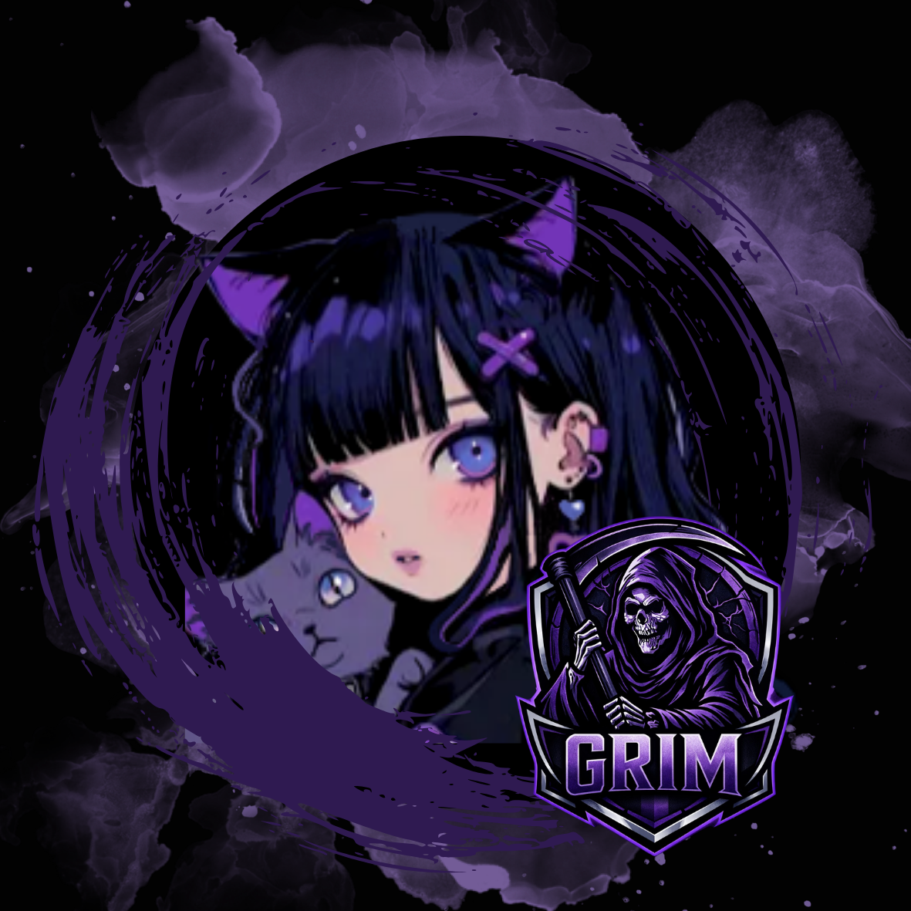

Grim Esports is a developing organisation that strives for group development and personal growth — built around having fun and competing together, because is it really fun if it's alone?
Streamer and Social Media Manager for Grim Esports — building community, creating content, and keeping the brand alive online.

The organisation branches out into more than just the competitive gaming field — it focuses on engaging with the community, Grim players, and content creators' personal development. We want to create a place where we can build friendships, develop skills and spark ambition.
From the competitive teams to the joy of content creation and community involvement — Grim has it all.
We are built upon teamwork, respect, dedication and community, with one simple mission in mind: to support current and upcoming talent within the esports community.
Welcome to Grim Esports
Enter the shadows. Build your legacy and become a supporter of the Grim organisation.